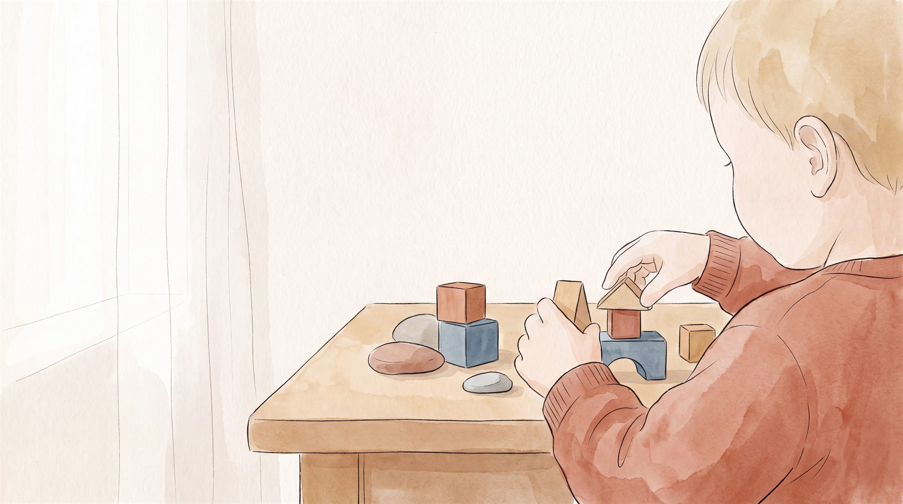

WISC-V 지능검사,
다섯 가지 힘 쉽게 읽기

아동·청소년 임상심리 전공
지능은 IQ 숫자 하나로 끝나지 않습니다. WISC-V는 아이의 지능을 언어·시공간·추론·기억·속도, 이렇게 다섯 가지 힘으로 나누어 보여 줘요. 이 다섯 힘이 어떻게 조합됐는지를 읽어야, 우리 아이가 무엇에 강하고 어디서 힘들어하는지가 보입니다.
검사 결과지를 받아 든 부모님이 가장 먼저 눈이 가는 곳은 맨 위의 IQ 숫자입니다. 109, 115 같은 한 숫자지요. 그런데 이 숫자 하나만 보고 아이를 판단하면 놓치는 것이 많습니다. 같은 IQ라도 그 안을 들여다보면 전혀 다른 아이들이 있거든요. WISC-V가 그 안쪽을 다섯 가지 힘으로 열어서 보여 줍니다.
WISC-V란 무엇인가요?
WISC-V는 만 6세부터 16세 아동·청소년의 지능을 재는 표준화 검사입니다. 정식 이름은 한국판 웩슬러 아동 지능검사 5판이에요. 병원, 학교, 상담센터에서 실제로 쓰는 검사이고, 같은 나이대 아이들 수천 명과 비교해 우리 아이의 위치를 알려 줍니다.
검사는 전체지능지수(FSIQ)라는 대표 점수 하나와, 그 아래 다섯 가지 지표 점수를 함께 내놓습니다. 부모님이 흔히 IQ라고 부르는 숫자가 바로 이 전체지능지수예요. 다만 이 대표 점수는 다섯 지표가 고르게 나왔을 때에만 아이를 잘 요약합니다. 지표끼리 점수 차가 크면 대표 점수 하나로는 아이의 진짜 모습을 담기 어렵지요. 그래서 다섯 지표를 하나씩 읽는 것이 중요합니다.
아이 지능을 이루는 다섯 가지 힘
WISC-V가 재는 다섯 가지 힘은 이렇습니다. 언어를 다루는 힘, 공간을 다루는 힘, 처음 보는 문제를 푸는 힘, 여러 정보를 동시에 붙드는 힘, 그리고 생각을 빠르게 행동으로 옮기는 힘이에요.
VCI지식을 받아들이고 생각을 말과 글로 풀어내는 힘 · 책 읽기, 토론, 서술형 답안
VSI눈으로 본 것을 머릿속에서 그리고 맞춰 보는 힘 · 도형, 조립, 길 찾기
FRI배운 적 없는 낯선 문제에서 스스로 규칙을 찾는 힘 · 응용 문제, 새 규칙
WMI여러 정보를 동시에 붙들고 다루는 힘 · 다단계 지시, 암산, 받아쓰기
PSI생각을 빠르고 정확하게 행동으로 옮기는 속도 · 시간 안의 시험, 필기
언어이해 (VCI), 말로 생각하고 표현하는 힘
단어의 뜻을 알고, 그것을 엮어 더 큰 개념으로 이해하고, 자기 생각을 말과 글로 풀어내는 능력입니다. 이 힘이 강한 아이는 어휘가 풍부하고 글의 의도를 잘 잡아내며, 발표나 서술형 답안에서 강점을 보여요. 약하면 개념어나 긴 문장을 이해하는 데 시간이 걸리고, 질문의 요지를 놓쳐 엉뚱한 답을 하기도 합니다.
시공간 (VSI), 눈으로 보고 머릿속에서 다루는 힘
눈에 보이는 모양을 분석하고, 부분과 전체의 관계를 파악하고, 머릿속에서 공간을 돌려 보는 능력입니다. 이 힘이 강한 아이는 도형과 지도에 강하고 조립을 잘하지요. 약하면 그래프나 도형을 어려워하고, 길을 잘 찾지 못하거나 좌우를 헷갈리기도 해요. 이 능력은 미술은 물론 수학·과학의 그림 자료를 읽는 데도 쓰입니다.
유동추론 (FRI), 낯선 문제에서 규칙을 찾는 힘
배운 적 없는 낯선 문제에서 스스로 규칙을 발견해 푸는 능력입니다. 흔히 '똑똑하다'고 말할 때 떠올리는 그 힘에 가깝지요. 이 힘이 강한 아이는 새로운 유형의 문제가 나와도 당황하지 않고 해결 전략을 세웁니다. 약하면 응용 문제를 어려워하고, 원리를 이해하기보다 공식을 통째로 외우려는 경향을 보여요.
작업기억 (WMI), 여러 정보를 동시에 붙드는 힘
정보를 잠깐 머릿속에 담아 둔 채, 그것으로 다른 작업을 함께 해내는 능력입니다. 흔히 머릿속 작업대에 비유해요. 이 힘이 강한 아이는 긴 설명의 핵심을 기억하고 여러 단계를 순서대로 해냅니다. 약하면 방금 들은 지시를 잊고, 문제를 풀다 숫자를 빠뜨리는 실수가 잦지요. 이런 아이는 산만하다는 오해를 자주 받습니다. 실제로는 분명히 주의를 기울였는데, 그 정보가 행동으로 옮겨지기 전에 머릿속에서 사라져 버린 경우가 많아요.
처리속도 (PSI), 생각을 빠르게 행동으로 옮기는 힘
단순하고 반복되는 정보를 얼마나 빠르고 정확하게 처리하는가를 봅니다. 깊은 사고력을 재는 것은 아니에요. 이 힘이 강한 아이는 필기와 시험을 시간 안에 여유 있게 해냅니다. 약하면 아는 문제도 시간이 부족해 다 풀지 못하고, 행동이 굼뜨다는 말을 듣기 쉬워요. 오히려 생각이 깊고 완벽주의 성향이 있어서 단순한 과제를 천천히 하는 아이도 있습니다.
IQ 숫자 하나가 아이를 다 말해주지 않는 이유
결과지 맨 위의 IQ 숫자는 출발점입니다. 예를 들어 전체지능지수 109는 [평균] 수준의 높은 끝자락에 있는 점수예요. 그런데 이 109도 딱 잘라 하나로 고정된 값이 아닙니다. 결과표에는 보통 '95% 신뢰구간 103-115' 같은 작은 글씨가 함께 적혀 있어요. 검사에는 늘 약간의 오차가 있어서, 아이의 실제 능력은 이 범위 어딘가에 있다고 보는 편이 더 정확하지요. 숫자 하나보다 이 작은 범위 글씨가 진짜 단서입니다.
더 중요한 것은 다섯 지표의 균형입니다. 다섯 힘이 고르게 나왔다면 전체지능지수 하나로 아이를 요약해도 큰 무리가 없어요. 하지만 지표끼리 점수 차가 크면 이야기가 달라집니다. 여러 능력을 한꺼번에 써야 하는 복잡한 공부에서는, 가장 약한 힘 하나가 아이의 실제 수행을 결정하는 일이 많거든요. 다른 네 힘이 아무리 튼튼해도 그렇습니다.
“지능은 좋다는데 왜 우리 아이는 힘들어할까요.” 상담실에서 자주 듣는 질문입니다. 답은 이 불균형에 있을 때가 많아요. 예를 들어 이해력과 추론력은 뛰어난데 작업기억과 처리속도가 유독 약한 아이는, 수업 내용은 대부분 알아듣지만 선생님이 불러 주는 알림장을 재빨리 받아 적는 일에서 무너집니다. 머릿속에서 정보가 순식간에 사라지거나, 생각의 속도를 손이 못 따라가기 때문이지요. 이런 아이는 '머리는 좋은데 게으르다'는 오해를 받기 쉽습니다.
강점의 조합으로 읽기
다섯 힘의 순위를 매기는 것은 큰 의미가 없습니다. 같은 점수라도 어떤 힘끼리 짝을 이루느냐에 따라 아이는 전혀 다른 모습이 되거든요.
예를 들어 언어이해가 높은 아이라도, 작업기억이 함께 높으면 긴 글을 읽고 핵심을 오래 붙들지만, 작업기억이 낮으면 방금 읽은 앞 내용을 놓쳐 독해가 흔들립니다. 유동추론이 아주 높은데 처리속도가 낮은 아이는, 머릿속에 답이 있어도 그것을 시간 안에 손으로 옮기지 못해 실제 능력보다 낮게 평가받기도 하고요. 이렇게 같은 숫자도 조합에 따라 다르게 읽힙니다.
그래서 결과지를 읽을 때는 가장 높은 힘과 가장 낮은 힘을 함께 봐야 합니다. 높은 힘은 아이가 가장 잘 배우고 자신을 표현하는 방식을 알려 주고, 낮은 힘은 어떤 도움을 마련해 줘야 할지 알려 주지요. 강점을 활용해 약점을 받쳐 주는 길을 찾는 것, 그것이 결과지를 실제 양육으로 옮기는 방법입니다.
이럴 때 지능검사가 도움이 됩니다
모든 아이가 지능검사를 받아야 하는 것은 아니에요. 다만 다음 같은 상황이라면 검사가 뚜렷한 도움이 됩니다.
- 머리는 좋은 것 같은데 성적이 그에 못 미쳐, 그 이유가 궁금할 때
- 특정 과목이나 활동에서만 유독 힘들어하고, 왜 그런지 알 수 없을 때
- 산만하다·게으르다는 말을 자주 듣는데, 정말 그런 건지 확인하고 싶을 때
- 아이의 강점을 살려 학습과 진로 방향을 잡아 주고 싶을 때
검사가 내놓는 것은 숫자와 지표입니다. 그 숫자를 '우리 아이에게 어떤 설명 방식, 어떤 학습법, 어떤 도움이 맞는가'로 옮기는 해석이 뒤따라야 검사가 일상을 바꿔요. 좋은 해석은 부모님을 가르치지 않습니다. 매일 아이를 보시는 부모님의 관찰에 검사라는 단서 하나를 더해, 방향을 함께 잡을 뿐이지요.
지능은 한 숫자로 끝나지 않습니다. 다섯 가지 힘의 조합으로 읽어야 아이가 보이지요.
- 곽금주, 장승민 (2019). K-WISC-V 실시와 채점 지침서. 학지사.
- Weiss, L. G., Saklofske, D. H., Holdnack, J. A., & Prifitera, A. (2020). WISC-V 임상적 활용과 해석 지침서 (이명경 외 역). 학지사. (원서 2019)
- Cattell, R. B. (1963). Theory of fluid and crystallized intelligence. Journal of Educational Psychology, 54(1), 1–22.
자주 묻는 질문
WISC 지능검사는 몇 살부터 받을 수 있나요?
IQ 숫자가 낮게 나오면 아이가 머리가 나쁜 건가요?
검사 점수는 자라면서 바뀌나요?
결과지 한 장을, ‘우리 아이 설명서’ 한 권으로.
마음기록소는 아이의 지능·기질·흥미와 부모님의 양육을 임상심리전문가가 풀어, 아이 이름이 박힌 맞춤 책 한 권으로 만들어 드립니다.
받게 되는 결과물 보기 →